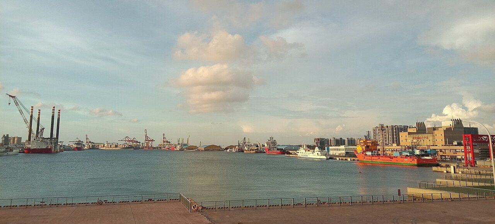
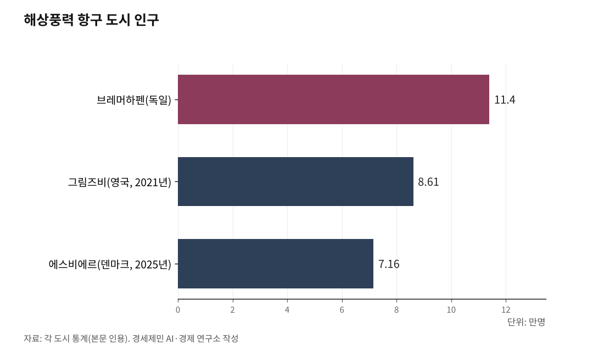

[인천해양산업, 생존기로⑯] 유럽 3도시 30년, 타이중 10년… 인천해상풍력은 어떻게
브레머하펜은 연구소를, 에스비에르는 항만을, 험버는 대학을, 타이중은 정부가 움직였다
제조 공장은 오고 가지만, 연구 생태계는 남는다… 유럽 강소국 30년의 교훈
인천신항 31만㎡, 영흥도 375만㎡… 하드웨어만으로는 네 도시가 되지 않는다
15편에서 다룬 서해안 초고압직류송전(HVDC, High Voltage Direct Current) 에너지고속도로가 던진 결론은 하나였다. 송전망만 까는 공사로 끝나면 생산지는 부담만 지고, 인천은 또 하나의 소비지가 된다. 생산지에 산업을 남기려면 항만 하드웨어만으로 부족하다. 연구소와 대학과 인력양성 체계가 함께 있어야 한다. 유럽 강소국 세 도시와 아시아에서 가장 빠르게 달려온 타이완이 지난 10~30년 동안 증명한 원칙이다.

1. 브레머하펜, 공장은 줄었지만 연구소는 남았다
독일 브레머하펜은 인구 11만4000명 항구 도시다. 자유한자도시 브레멘주에 속하고 북해와 베저강이 만나는 지점에 있다. 조선과 어업 쇠퇴로 주저앉았던 도시가 2000년대부터 해상풍력 연구 거점으로 재편됐다. 핵심은 항만 안에 연구소를 지은 결정이다.
프라운호퍼 해상풍력에너지시스템연구소(IWES, Institute for Wind Energy Systems)가 2009년 1월 문을 열었다. 전신 풍력에너지해양기술센터(CWMT)를 확대해 정식 연구소로 출범한 것이다. 현재 직원 400여명, 9개 사이트를 운영한다.
시험 시설은 항만 지근거리에 있다. 2015년 개관한 동적 나셀 시험대(DyNaLab)는 나셀(nacelle, 발전기와 기어박스를 담는 수납공간) 10MW급을 실험실에서 시험한다. 2023년 6월 준공한 115m+ 블레이드 시험대는 사업비 약 2300만유로(약 340억원)로, 연방경제기후보호부 1800만유로와 연방교육연구부·브레멘주·유럽지역개발기금(ERDF) 500만유로를 공동 투자했다. 브레머하펜응용과학대학 fk-wind 연구단이 IWES와 협력해 현장 측정과 인력양성을 맡는다.
구조조정도 겪었다. 아드벤(Adwen)이 2017년 브레머하펜 생산을 종료하고, 센비온 자회사 파워블레이드(Powerblades)도 구조조정을 거치면서 해상풍력 고용이 3000명에서 1500명으로 줄었다. 당초 목표 8000명에는 미치지 못했다. 그러나 연구소는 남았다. 풍력에너지기구(WAB) 회원사 250개가 남아 있고, 신규 수소 실험실이 들어서면서 제조에서 연구와 수소로 무게중심이 옮겨갔다. 공장은 오고 갔지만 연구 생태계가 도시 경쟁력을 지켰다.

2. 에스비에르, 북해 유전이 해상풍력 수도가 된 25년
덴마크 에스비에르시 인구는 7만1554명(2025년 1월 1일 기준), 자치체 인구는 11만5157명이다. 1868년 국왕 칙령으로 어항으로 출발했고, 1972년 북해 유전이 생산에 들어가면서 석유·가스 거점으로 전환됐다. 2002년 세계 첫 대규모 해상풍력단지 혼스 레브 1이 에스비에르항에서 출항하면서 다시 해상풍력 수도로 이름을 바꿨다.
포트에스비에르(Port Esbjerg) 공식 자료 기준(2024~2025) 항만 면적 450만㎡, 입주 기업 200개 이상, 고용 1만명이다. 2001년 이후 59개 해상풍력 프로젝트에 관여했고, 누적 선적 용량 24GW가 넘는다. 유럽에 설치된 해상풍력의 약 80%가 이 항만에서 선적됐다. 해상풍력 가치사슬 전체가 한 항만에 모인 곳은 세계에서 여기뿐이다.
에스비에르항은 자치항만이다. 이익이 모두 항만 재투자로 돌아간다. 최근 57만㎡ 신규 터미널 공사가 진행 중이고, 유럽투자은행(EIB)이 민·군 겸용 이중용도 인프라로 자금을 댄다. 2020년대 이후에는 수전해 수소(Power-to-X) 2GW 이상이 항만 인접지에 계획돼 있다. 해상풍력에서 수소로 한 번 더 무게중심을 옮긴다. 1972년 유전 지원에서 2002년 해상풍력 진입, 2020년대 수소 전환까지 50년 축적이 핵심이다.
3. 험버, O&M에 특화해 대학과 엮었다
영국 그림즈비는 링컨셔주 북동부 험버강 하구 항구 도시다. 인구 8만6138명(2021년 센서스), 자치구 북동 링컨셔 전체는 15만7000명이다. 한때 세계 최대 어항이었다가 1970년대 대구전쟁과 유럽연합(EU) 공동어업정책으로 어업이 쇠퇴한 뒤 침체에 빠진 도시다.
그림즈비는 운영·유지보수(O&M, Operation & Maintenance) 특화로 살아났다. 해상재생에너지기술혁신센터(ORE Catapult)가 그림즈비 항만에 운영·유지보수 우수센터(OMCE)를 뒀다. 영국 해상풍력 단지 다수가 험버를 기지로 O&M 서비스를 받는 구조다. 오스테드 이스트코스트 허브, 트라이튼 놀 기지, 시윈드·제임스피셔·릭스 등 공급망이 밀집해 있다.
대학과 엮은 구조가 특징이다. 험버대학교(University of Hull)가 아우라(Aura) 파트너십에 참여해 ORE Catapult와 공동 연구·인력양성을 수행한다. 2019년 11월 ORE Catapult가 그림즈비 확장 계획을 발표하면서 10년 내 50~70개 일자리를 약속했다. 2023년에는 280만파운드(약 52억원) 5G 포털 프로젝트가 착수됐다. 그림즈비 항만과 린앤이너다우싱 풍력단지를 잇는 세계 최대 해상풍력 리빙랩이다. 제조 강국은 아니지만 O&M 한 분야로 세계 최대를 만들어낸 경로가 험버의 답이다.
4. 타이중, 국가가 10년 만에 모두를 동시에 만들었다
타이완 타이중은 인구 286만명 대도시다. 인천(약 300만명)과 규모가 비슷하다. 유럽 세 도시가 중소 항만 도시라는 점과 다르다. 인천과 조건이 가장 유사한 사례다.
타이완은 2012년 재생에너지개발법을 제정한 뒤, 2017년 경제부 산하에 해양기술혁신센터(MTIC)를 카오슝에 세웠다. 금속공업연구개발센터가 운영주체이고, 인력양성·연구개발·해양엔지니어링 3개 부문을 동시에 운영한다.
타이중에는 2018년 5월 타이완국제풍력훈련공사(TIWTC)가 문을 열었다. 자본금 NTD 1억원(약 41억원), 주주는 타이완국제항만공사(TIPC)·타이완전력·중국강철·선박건조공사·스완코르·영국 시윈드 6곳이다. 6000㎡ 용지에 아시아 최초로 세계풍력기구(GWO, Global Wind Organisation) 기초안전훈련 전 과정 인증을 받았고, 21m 고소작업 훈련타워와 수심 3~6m 실내 수영장을 갖췄다. 개관 1년 만에 3000명 이상을 배출했고, 2024·2025년 GWO 아시아태평양 교육팀상을 연속 수상했다.
산업 집적도 같은 속도로 이뤄졌다. 지멘스가메사가 2021년 타이중항에 유럽 밖 첫 나셀 조립공장을 세웠고, 2024년 3만㎡에서 9만㎡로 3배 확장해 하이롱 사업에 나셀 73기를 공급하고 있다. 베스타스 블레이드 공장도 2021년 가동을 시작했다. TIPC는 풍력 전용 산업단지 100만㎡와 타이중항 37·38 부두 신설, 방조제 매립에 수천억원 규모를 투입했다. 타이베이과기대 해상풍력엔지니어링연구센터, 선박해양산업R&D센터, 중화선급이 대학·인증 축을 맡는다. 2025년 기준 4.4GW가 가동 또는 건설 중이고 추가 5.8GW가 계약·인허가 단계에 있다.
타산지석도 있다. 정부가 강제한 로컬 콘텐츠 요구조건이 2024년 7월 유럽연합 세계무역기구(WTO) 제소로 번졌다. 발전차액지원제도가 축소되고 로컬 콘텐츠만 남으면서 수익성이 악화됐고, 2024년 블록개발 3.2 라운드는 입찰가가 NT$0/kWh까지 내려가 기업 전력구매계약(CPPA)으로 수익을 맞추게 됐다. 경제부 장관 궈즈후이(郭智輝)가 "온실 정책을 완화하겠다"고 공식화했다. 국산화 속도를 너무 올리면 시장이 식는다는 교훈이다.
5. 인천, 하드웨어는 시작됐다… 소프트웨어는 비어 있다
인천 해상풍력 배후항만은 이제 막 확정됐다. 기후에너지환경부가 2025년 12월 범정부 해상풍력 전담반 2차 회의에서 인천신항 동측 31만4400㎡를 해상풍력 지원부두로 제4차 전국항만기본계획 수정계획에 반영했다. 사업비 약 3200억원, 2032년 완공 목표다. 영흥도 에코랜드 82만㎡와 영흥화력 회처리장 142만㎡와 공유수면 매립 145만㎡를 합친 약 375만㎡ 설치항만 확장 구상이 뒤를 잇는다. 다만 영흥도는 제5차 전국항만기본계획(2031~2040) 반영이 필요해 빨라야 2031년 이후 착수한다. 합산하면 약 406만㎡로, 에스비에르 450만㎡에 근접한다.
면적은 따라잡을 수 있다. 그러나 네 도시가 가진 나머지 셋이 인천에는 없다. 브레머하펜의 프라운호퍼 IWES 같은 전문 연구소가 없다. 에스비에르의 항만 자치 재투자 구조가 없다. 험버의 ORE Catapult-험버대학교 같은 대학-연구소 연계가 없다. 타이중의 MTIC와 TIWTC 같은 정부 주도 집적 기관이 없다.
인천의 조건은 나쁘지 않다. 인천신항 배후 용지가 확보되고 있고, 인하대학교가 조선해양공학과와 아태물류학부, 물류전문대학원 등 해상풍력 연관 학과와 대학원을 갖추고 있다. 판교·송도 AI 혁신 클러스터가 국정 과제로 추진되고 있다. 서해안 HVDC 4개 노선 가운데 2개 노선 종착지가 인천이다. 양육점(해저케이블이 바다에서 육지로 올라오는 지점)과 자체 해상풍력 6.2GW가 같은 도시에 있는 유일한 거점이다.
네 도시가 보여준 네 갈래 길 가운데 인천은 무엇을 고를 것인가. 브레머하펜처럼 연구소를 항만에 둘 것인가. 에스비에르처럼 이익을 재투자로 묶을 것인가. 험버처럼 O&M 한 분야로 특화할 것인가. 타이중처럼 정부가 속도전을 펼 것인가. 하드웨어만 쌓는 길로는 네 도시 어느 쪽도 되지 않는다. 국내에도 성공 사례가 있다. 다음 편에서 인천 항공우주산학융합원의 9년을 다룬다.
참고문헌
·"제4차 전국항만기본계획 수정계획", 기후에너지환경부·해양수산부, 2025.12. https://www.gov.kr
·"범정부 해상풍력 보급 가속 전담반 2차 회의 결과", 기후에너지환경부, 2025.12.10.
·"Port of Esbjerg: World's largest base port for offshore wind activities", State of Green. https://stateofgreen.com/en/news/port-of-esbjerg-worlds-largest-base-port-for-offshore-wind-activities/
·"Offshore wind", Port Esbjerg. https://portesbjerg.dk/en/business-areas/offshore-wind
·"Esbjerg port dual-use: European Investment Bank project story", EIB, 2025.5. https://www.eib.org/en/stories/esbjerg-port-dual-use
·"Institute for applied research", Fraunhofer IWES. https://www.iwes.fraunhofer.de/en/about-us/institute.html
·"Habeck inaugurates 115m+ Rotor Blade Test Rig", Fraunhofer IWES, 2023.6.30. https://www.iwes.fraunhofer.de/en/press-media/archive-2023/innovation-for-offshore-wind-energy-at-fraunhofer-iwes--habeck-i.html
·"Wind Energy", BIS Bremerhaven. https://www.bis-bremerhaven.de/en/green-economy/wind-energy
·"Adwen beendet Produktion in Deutschland", energate messenger, 2017.6. https://www.energate-messenger.de/news/174832/adwen-beendet-produktion-in-deutschland
·"O&M Centre of Excellence", ORE Catapult. https://ore.catapult.org.uk/products-services/smart-om/omce
·"ORE Catapult announces Humber expansion plans", ORE Catapult, 2019.11.5. https://ore.catapult.org.uk/press-releases/ore-catapult-announces-humber-expansion-plans/
·"MTIC Introduction", Maritime Technology Innovation Center. https://www.mtic.org.tw/EN/Home/Article/fae783a2-c64a-45f3-b74e-52f45de40191
·"Taiwan International Windpower Training Corporation Ltd.", Taiwan International Ports Corporation. https://www.twport.com.tw/en/business/Articles?a=123
·"Tripling in Taiwan: Siemens Gamesa to massively expand offshore nacelle manufacturing activities", Siemens Gamesa, 2022.9.21. https://www.siemensgamesa.com/global/en/home/press-releases/092122-siemens-gamesa-press-release-taiwan-offshore-nacelle-manufacture.html
·"Global offshore wind: Taiwan", Norton Rose Fulbright, 2024.10.15. https://www.nortonrosefulbright.com/en/knowledge/publications/e50b5c34/global-offshore-wind-taiwan
·"A balancing act: local content and Taiwan's renewable ambitions", Spinergie, 2025.9. https://www.spinergie.com/blog/taiwans-renewable-ambitions-offshore-wind
·"인천신항 해상풍력 배후항만 확정···영흥도 확장 불가피", 인천투데이, 2025.12.10. https://www.incheontoday.com/news/articleView.html?idxno=312109
※ 이 기사는 AI 프로그램 클로드를 활용해 작성했습니다.
사진 출처
· [대표사진] 雅婕, "台中港港區.jpg", 위키미디어 공용, CC0, https://commons.wikimedia.org/wiki/File:%E5%8F%B0%E4%B8%AD%E6%B8%AF%E6%B8%AF%E5%8D%80.jpg
※ 이 기사는 인공지능을 활용해 작성했습니다.
관련기사
- [인천해양산업, 생존기로⑮] 서해안 HVDC 11.5조, 인천이 관문
- [인천해양산업, 생존기로⑰] 항공우주산학융합원 9년, 해양도 할 수 있다
- [인천해양산업, 생존기로⑱] 해양·항만·수산 융합 정책연구기관, 지금 당장
- [인천 해양산업, 생존의 기로⑲] 해수부, 인천 응답 '균형 네트워크' 용역 발주…과업 4에 지방해수청 조직 개편 포함
저작권자 © AI경세제민 무단전재 및 재배포, AI학습 및 활용 금지